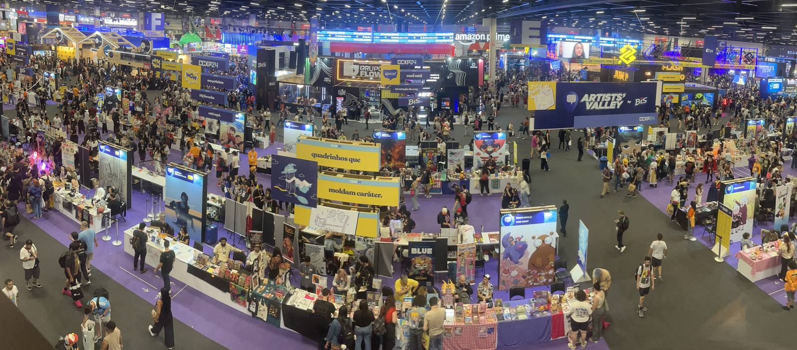

Festivals · Culture
CCXP26
- Dates
- –
- Venue
- São Paulo Expo
- Location
- São Paulo, Brazil
- Format
- In-person
- Category
- Culture
- Industry
- Pop culture / Comics / Entertainment
- Organiser
- Omelete Company
- Official website
- https://www.ccxp.com.br/
About
Pop-culture convention; Saturday tickets sold out per the official homepage. Brazil dates are local (Brasília time, UTC-3, unless the venue is in another Brazilian time zone, e.g. Manaus UTC-4).
Topics: comics, film, TV, games, cosplay.
No organiser attendance figure found on the official pages checked (23-24 Nov 2026). Ranked by an estimated size tier 'very large' (about 100,000-1,000,000 attendees; our judgement from format, venue and scale, not an official number).
Sources
- Official — https://www.ccxp.com.br/
- Official (CCXP help centre) — https://ajuda.ccxp.com.br/hc/pt-br/articles/12150485895821-Quando-vai-ser-a-CCXP26
Hotels
- Emiliano São Paulo — Forbes 4-Star · 384 Rua Oscar Freire, 01426-000 São Paulo · 9.5 km from the venue · Price on request
- Hotel Fasano São Paulo — Forbes 4-Star · Rua Vitório Fasano, 01415-009 São Paulo · 9.8 km from the venue · Price on request
- Palácio Tangará — Forbes 4-Star · Rua Deputado Laércio Corte, 05707-400 São Paulo · 9.6 km from the venue · from USD 630.09/night · 3–5 December 2026 · as of 24 November 2026
Venue
- São Paulo Expo — Convention centre · Rodovia dos Imigrantes, km 1,5, CEP 04329-900, São Paulo, SP, Brazil